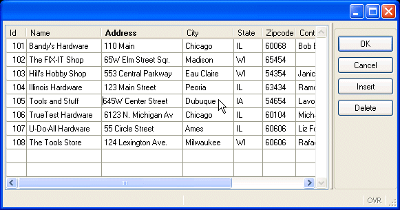

Summary:
This program uses a form and a screen array to allow the user to view and change multiple records of a program array at once. The INPUT ARRAY statement and its control blocks are used by the program to control and monitor the changes made by the user to the records. As each record in the program array is Added, Updated, or Deleted, the program logic makes corresponding changes in the rows of the customer database table.
The example window shown below has been re-sized to fit on this page.

Display on Windows platform
The INPUT ARRAY statement supports data entry by users into a screen array, and stores the entered data in a program array of records. During the INPUT ARRAY execution, the user can edit or delete existing records, insert new records, and move inside the list of records. The program can then use the INSERT, DELETE or UPDATE SQL statements to modify the appropriate database tables. The INPUT ARRAY statement does not terminate until the user validates or cancels the dialog.
INPUT ARRAY cust_arr WITHOUT DEFAULTS FROM sa_cust.*
ATTRIBUTES (UNBUFFERED)
The example INPUT ARRAY statement binds the screen array fields in sa_cust to the member records of the program array cust_arr. The number of variables in each record of the program array must be the same as the number of fields in each screen record (that is, in a single row of the screen array). Each mapped variable must have the same data type or a compatible data type as the corresponding field.
The WITHOUT DEFAULTS clause prevents BDL from displaying any default values that have been defined for form fields. You must use this clause if you want to see the values of the program array.
As in the INPUT statement, when the UNBUFFERED attribute is used, the INPUT ARRAY statement is sensitive to program variable changes. If you need to display new data during the execution, use the UNBUFFERED attribute and assign the values to the program array row; the runtime system will automatically display the values to the screen. This sensitivity applies to ON ACTION control blocks, as well.
Some other attributes that can be used with an INPUT ARRAY statement are:
Your program can control and monitor the changes made by the user by using control blocks with the INPUT ARRAY statement. The control blocks that are used in the example program are:
For a more detailed explanation of the priority of control blocks see Input Array.
The language provides several built-in functions to use in an INPUT ARRAY statement. The example program uses the ARR_CURR function to tell which array element is being changed. This function returns the row number within the program array that is displayed in the current line of a screen array.
There are some pre-defined actions that are specific to the INPUT ARRAY statement, to handle the insertion and deletion of rows in the screen array automatically:
As with the pre-defined actions accept and cancel actions discussed in Chapter 4, if your form specification does not contain action views for these actions, default action views (buttons on the form) are automatically created. Control attributes of the INPUT ARRAY statement allow you to prevent the creation of these actions and their accompanying buttons.
The custallform.per form specification file displays multiple records at once, and is similar to the form used in chapter 7. The item type of field f6, containing the state values, has been changed to COMBOBOX to provide the user with a dropdown list when data is being entered.
| Form file (custallform.per) |
|
The single module program custall.4gl allows the user to update the customer table using a form that displays multiple records at once.
| Main block (custall.4gl) |
|
Notes:
03 thru
13 define a dynamic array
cust_arr
having the same structure as the customer table. The array is modular is scope.17 defines a local variable
idx, to hold the returned value from the load_custall
function.20 connects to the custdemo database.22 opens a window with the form
manycust. This form contains a screen array
sa_cust which is referenced in the
program.24 thru 27
call the function load_custall to
load the array, which returns the index of the array.
If the load was successful (the returned index is greater than 0) the
function inparr_custall is called. This
function contains the logic for the Input/Update/Delete of rows.29 closes the window.30 disconnects from the database.This function loads the program array with rows from the customer database table. The logic to load the rows is identical to that in Chapter 7. Although this program loads all the rows from the customer table, the program could be written to allow the user to query first, for a subset of the rows. A query-by-example, as illustrated in chapter 4, can also be implemented using a form containing a screen array such as manycust.
| Function load_custall (custall.4gl) |
|
Notes:
02 defines a local record
variable,
cust_rec, to hold the rows fetched in FOREACH.05 thru
16 declare the cursor
custlist_curs to retrieve
the rows from the customer table.20 thru
23 retrieve the rows from the result set into the
program
array.25 thru
27 If the array is empty, we display a
warning message. 29 returns the number of rows to the
MAIN function.This is the primary function of the program, driving the logic for inserting, deleting, and changing rows in the customer database table. Each time a row in the array on the form is added, deleted, or changed, the values from the corresponding row in the program array are used to update the customer database table. The variable opflag is used by the program to indicate the status of the current operation:
The value of opflag is tested in an AFTER ROW control block to determine whether an SQL INSERT or SQL UPDATE of the database table is performed.
Since multiple control blocks are triggered by an operation, the order of execution of the blocks is important. This is discussed in detail in the INPUT ARRAY page of this manual. The example below illustrates how the order of execution of the control blocks is used by the program to set the opflag variable appropriately:
| Function inparr_custall (custall.4gl) |
|
Notes:
03 defines the variable
curr_pa, to hold the index number of the current record in the
program
array.04 defines the variable
opflag, to indicate whether the operation being
performed on a record is an Insert
("I") or an Update ("U").06 thru
57 contain the INPUT ARRAY statement,
associating the program
array cust_arr with the sa_cust screen array on the form.
The attribute WITHOUT DEFAULTS is used so the same statement can handle both
Updates and Inserts of new records. The
UNBUFFERED attribute insures that
values entered into the program
array are automatically displayed in the screen array on the form.10 thru 12
BEFORE INPUT control block: before the
INPUT ARRAY statement is executed a
MESSAGE is displayed to the user. 14 thru 16 BEFORE ROW control block:
when called in this
block, the ARR_CURR function returns
the index of the record that the user is moving into (which will become the
current record). This is stored in a variable curr_pa, so the index
can be passed to other control blocks.
We also initialize the opflag to "N": This will be
its value unless an update or insert is performed. 18 and
19 BEFORE INSERT control block:
just before the user is allowed to enter the values for a new record, the
variable opflag is set to "T", indicating an Insert operation
is in progress. 21 and
22 AFTER INSERT
control block sets the opflag to "I" after the insert
operation has been completed. 24 thru 27 BEFORE DELETE
control block: Before the record
is removed from the program array, the function delete_cust
is called, which verifies that the user wants to delete the current
record. In this function, when the user verifies the delete, the
index of the record is used to remove the corresponding row
from the database. Unless the delete_cust function returns
TRUE, the
record is not removed from the program
array. 29 thru
32 ON ROW CHANGE control block: After
row modification, the program checks whether the modification
was an insert of a new row. If not, the opflag is set to "U"
indicating an update of an existing row. 34 thru
37 BEFORE FIELD store_num control block: the store_num field should not be
entered by the user unless the
operation is an Insert of a new row, indicated by the "T" value of opflag. The store_num column in the customer database table is a primary key and cannot
be updated. If the operation is not an insert, the NEXT FIELD statement is
used to move the cursor to the next field in the
program
array, store_name, allowing
the user to change all the fields in the
record of the program
array except store_num. 39 thru
46 ON CHANGE store_num
control block: if the operation is an Insert, the store_num_ok function is called to
verify that the value that the user has just entered into the field
store_num
of the current program
array does not already exist in the customer database
table. If the store number does exist, the value entered by the user is nulled out, and
the cursor is returned to the store_num field. 48 thru
55 AFTER ROW control
block: First, the program checks
INT_FLAG
to see whether the user wants to interrupt the INPUT operation. If
not, the opflag is checked in a
CASE statement, and the insert_cust or update_cust
function is called based on the opflag value. The index of the current record is passed
to the function so the database table can be modified. 57 indicates the end of the INPUT statement. 59 thru
61 check the value of the interrupt flag INT_FLAG
and re-set it to FALSE if necessary.When a new record is being inserted into the program array, this function verifies that the store number does not already exist in the customer database table. The logic in this function is virtually identical to that used in Chapter 5.
| Function store_num_ok (custall.4gl) |
|
Notes:
02 The index of the current record in the
program
array is stored in the variable idx,
passed to this function from the INPUT ARRAY control block
ON
CHANGE store_num.03 The variable
checknum is defined to hold the store_num returned by the SELECT
statement.06 sets the variable
cont_ok to an initial
value of FALSE. This variable is used to indicate whether the store number is
unique.07 thru
12 use an embedded SQL SELECT statement to check
whether the store_num already exists in the customer table. The index
passed to this function is used to obtain the
value that was entered into the store_num field on the form.
The entire database row is not retrieved by the SELECT statement since the
only information required by this program is whether the store number already
exists in the table. The SELECT
is surrounded by WHENEVER ERROR
statements.13 thru
22 test SQLCA.SQLCODE
to determine the success of
the SELECT statement. The variable
cont_ok is set to indicate whether the store number
entered by the user is unique.24 returns the value of cont_ok to the
calling function.This function inserts a new row into the customer database table.
| Function insert_cust (custall.4gl) |
|
Notes:
02 This function is called from the AFTER INSERT
control block of the INPUT ARRAY statement.
The index of the record that was inserted into the cust_arr
program
array is passed to the function and stored in the variable
idx.04 thru
16 uses an embedded SQL INSERT statement to
insert a row into the customer database table. The values to be inserted into the customer table are obtained from
the record just inserted into the program
array. The INSERT
is surrounded by WHENEVER ERROR
statements.18 thru
22 test the SQLCA.SQLCODE
to see if the insert into the database was successful, and return an
appropriate message to the user.This function updates a row in the customer database table. The functionality is very simple for illustration purposes, but it could be enhanced with additional error checking routines similar to the example in chapter 6.
| Function update_cust (custall.4gl) |
|
Notes:
02 The index of the current record in the
cust_arr program
array is passed as idx from the ON ROW CHANGE control block.04 thru
16 use an embedded SQL UPDATE statement to update
a row in the customer database table. The index of the current record in the
program
array is used to obtain the
value of store_num that is to be matched in the customer table. The
customer row is updated with the values stored in the current record of the program
array. The UPDATE
is surrounded by WHENEVER ERROR
statements.18 thru
22 test the SQLCA.SQLCODE
to see if the update of the row in the database was successful, and
return an appropriate message to the user.This function deletes a row from the customer database table. A modal Menu similar to that illustrated in Chapter 6 is used to verify that the user wants to delete the row.
| Function delete_cust (custall.4gl) |
|
Notes:
02 The index of the current record in the cust_arr
program array is passed from the BEFORE DELETE control block of
INPUT ARRAY, and stored in the variable idx. The BEFORE DELETE
control block is executed immediately before the record is deleted from the program array, allowing the logic in this function to be
executed before the record is removed from the program array.05 sets the initial value of del_ok to FALSE.
07 thru 15
display the modal
Menu to the user for confirmation of the Delete.18 thru 22
use an embedded SQL DELETE statement to
delete the row from the customer database table. The variable idx
is used to determine the value of store_num in the program array record that is to be used as criteria in the DELETE
statement. This record in the program array has not yet been removed, since this delete_cust function was
called in a BEFORE DELETE control block. The DELETE is surrounded by WHENEVER ERROR
statements.24 thru 30
test the SQLCA.SQLCODE
to see if the update of the row in the database was successful, and return an appropriate message to the user.
The value del_ok is set based on the success of the SQL DELETE
statement.33 returns the variable del_ok to the BEFORE DELETE
control block, indicating whether the Delete of the customer row was successful.